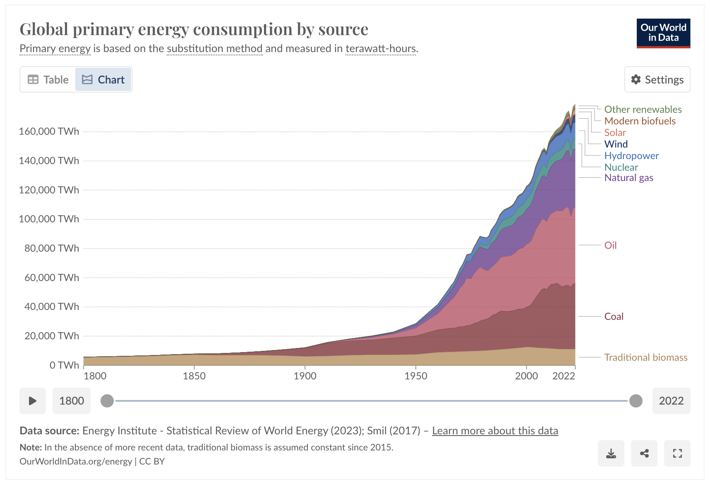
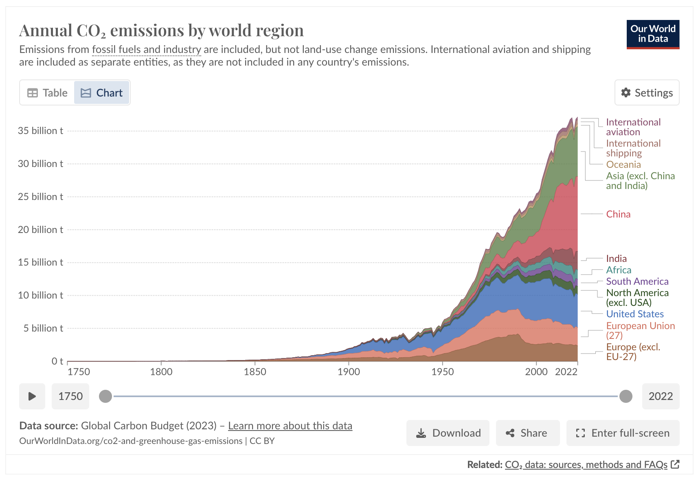
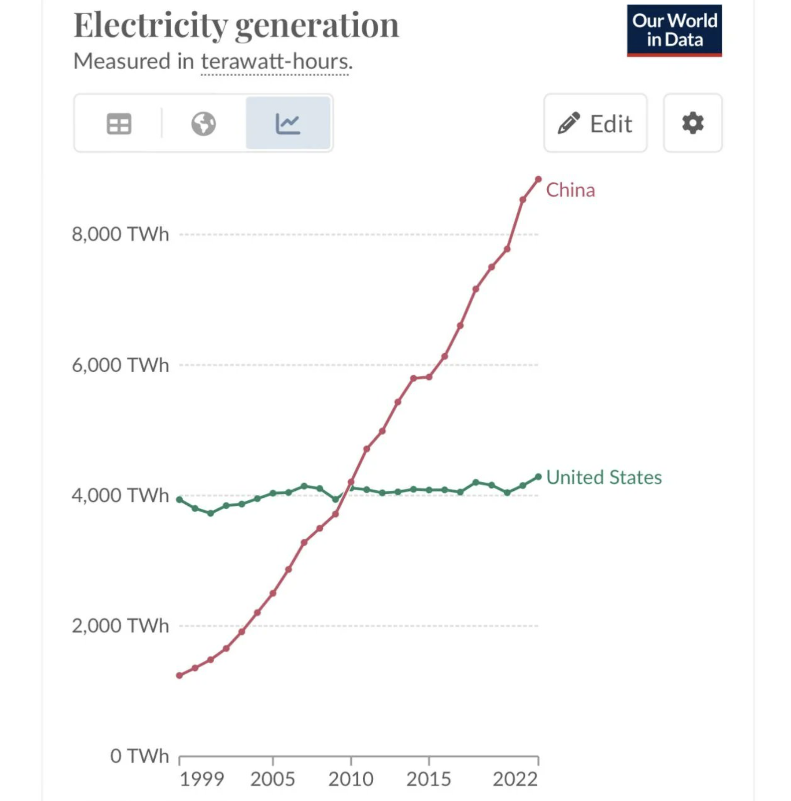
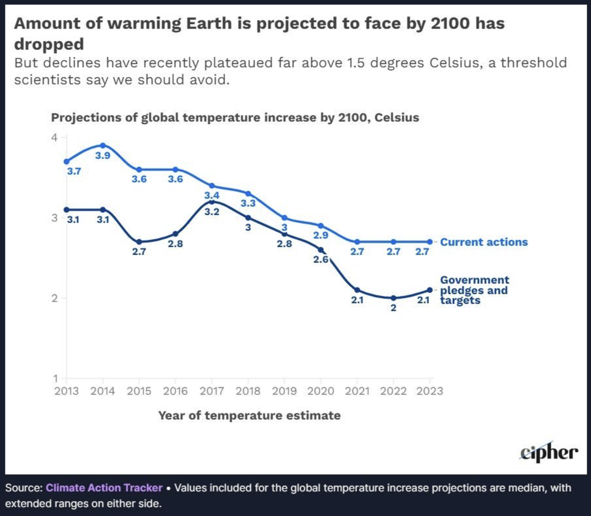

Climate Change
- I sense it's gonna be okay
- Carbon is starting to peak
- How much energy does each nation use?
- Why is switching to other sources happening so slowly

- What would need to be built in different countries to change the energy mix?

- US
- China

- India

- People argue that China aren't gonna make the hard choicese